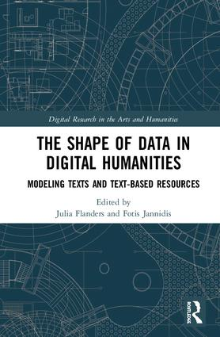
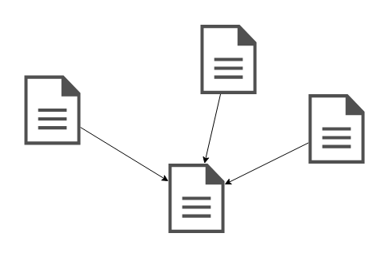

Le volet numérique du projet
« Gustave Roud. Œuvres complètes »
UNIL (Master Histoire du livre et édition des textes), 24.10.2019
En ligne: elespdn.github.io/talks/20191024_masterHistoireLivre/20191024_masterHistoireLivre.html
En ligne: elespdn.github.io/talks/20191024_masterHistoireLivre/20191024_masterHistoireLivre.html
- Collation automatique
- Modélisation
- Encodage [XML/TEI]
- Réseaux génétiques [OWL/RDF]
Outils de collation
Parmi les plus utilisés ...
- Juxta Commons
- CollateX (Java | Python)



TEI (Text Encoding Initiative)

Alessio Christen et Elena Spadini, « Modelling the writing process. Gustave Roud, from the diary to the work, from the document to the networks », Genesis, Cracovie, 6 juin 2019.
GENO
Editions du Journal de Roud :
- Roud, Gustave, Journal, éd. Philippe Jaccottet, Vevey, Bertil Galland, 1982.
- Roud, Gustave, Journal, Carnets, cahiers et feuillets, 1916-1971, éd. Anne-Lise Delacrétaz et Claire Jaquier, Moudon, Editions Empreintes, 2004.
- Biasi, Pierre-Marc de, Génétique des textes, Paris, CNRS, « Biblis », 2011.
- Christen, Alessio et Elena Spadini, « Modelling the writing process. Gustave Roud, from the diary to the work, from the document to the networks », Umanistica digitale (à paraître)
- Lejeune, Philippe, « Le journal : genèse d’une pratique », Genesis [En ligne], 32 | 2011. journals.openedition.org/genesis/310
- Mahrer, Rudolf, « La plume après le plomb », Genesis [En ligne], 44 | 2017. journals.openedition.org/genesis/1731
- Simonet-Tenant, Françoise, « Le journal personnel comme pièce du dossier génétique », Genesis [En ligne], 32 | 2011. journals.openedition.org/genesis/425
- TEI - Text Encoding Initiative http://tei-c.org/
- CollateX collatex.net/
- Catalogue of Digital Editions dig-ed-cat.acdh.oeaw.ac.at/
- a catalog of Digital Scholarly Editions www.digitale-edition.de/
- Flanders, Julia, and Fotis Jannidis, eds. 2018. The Shape of Data in Digital Humanities. Modeling Texts and Text-Based Resources. Routledge.